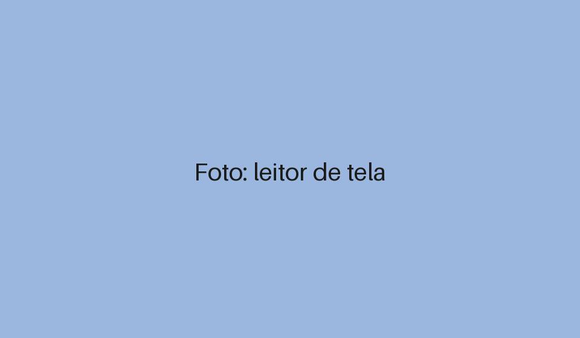
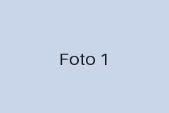
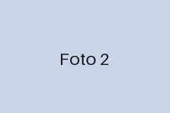
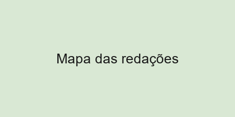

Acessibilidade
Leitores de tela ganham suporte nativo em novos navegadores

Atualização promete facilitar a navegação de pessoas com deficiência visual em portais de notícias e serviços públicos.
Acessibilidade

Atualização promete facilitar a navegação de pessoas com deficiência visual em portais de notícias e serviços públicos.

Empresas brasileiras ampliam contratação de profissionais com deficiência

Governo lança guia de acessibilidade para sites públicos
